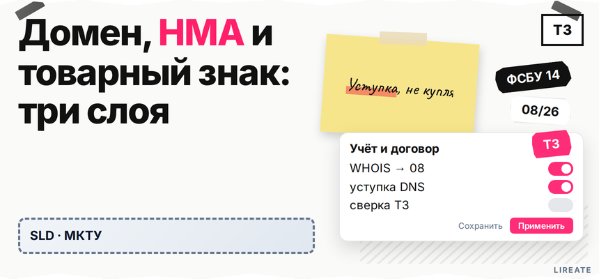

Бухгалтерия требует поставить домен на баланс, юрист - на товарный знак, а продавец шлёт "договор купли-продажи" имени. Это три разных слоя: право у регистратора, учёт по ФСБУ 14/2022 и исключительное право в Роспатенте. За один проход вы разведёте НМА, оформите уступку и сверите адрес с реестром ТЗ. 19.11.2026; не заменяет аудит и юридическую консультацию.

TL;DR / Быстрый инсайт: Домен - символьный адрес в сети (п. 15 ст. 2 149-ФЗ), не объект интеллектуальной собственности. Отдельным НМА его обычно не учитывают; первичная регистрация часто входит в сайт на 08, продление - в 26/44. Сделка - уступка права администрирования, не купля-продажа вещи. Имя в строке браузера сравните с товарным знаком в Поисковой платформе (п. 5 п. 2 ст. 1484 ГК). Детальный чек-лист признаков ФСБУ - в материале "Доменное имя - НМА или нет".
Ловушка - смешать "купил домен - бренд мой" и "домен на 08 - защита как у патента". Регистрация у регистратора даёт право администрирования; бухгалтерия смотрит признаки п. 4 ФСБУ; Роспатент выдаёт свидетельство в классах МКТУ. Ошибка в одном слое не лечится автоматически в другом.
НМА - актив без вещественной формы, под контролем и с выгодой дольше года. SLD - часть адреса между точками (в brand.ru это brand), её сравнивают со знаком. WHOIS - выписка об администраторе.
По ФИПС домен не результат ИС; знак в адресе - использование ТЗ. Ориентир учёта с 2024 года - эволюция от письма Минфина 2002 к ФСБУ 14/2022 и вашей учётной политике.
| Слой | Что фиксируется | Главный документ | Типичный риск |
|---|---|---|---|
| Администрирование | Кто продлевает и меняет DNS | Договор с регистратором, WHOIS | Просрочка, чужой администратор в кабинете |
| Бухучёт | Сайт/права как НМА или расход | Учётная политика, счета 08/26 | Продление на 08, домен "отдельно" без признаков |
| Товарный знак | Монополия на обозначение | Свидетельство Роспатента, МКТУ | Сходство с чужим знаком для однородных услуг |
Делайте: заведите внутреннюю таблицу "домен - юрлицо - счёт - знак - классы МКТУ". Не делайте: считать, что оплаченный счёт регистратора автоматически защищает название в суде - для профилактики смотрите проверку бренда онлайн до и после покупки.
Маршрут владельца:
Договор регистратора → решение по ФСБУ → первичка → сверка с ТЗ → учётная политика → (при сделке) уступка → ежегодный мониторинг WHOIS и реестра
Выгрузите договор, счета на первичную регистрацию и продления, акты. WHOIS должен совпадать с юрлицом в ЕГРЮЛ. Отметьте, есть ли сайт на 08. Делайте: PDF-пакет на домен. Не делайте: администратора-физлицо без передачи прав компании.
По п. 4 ФСБУ все пять признаков должны выполняться вместе. Отдельный домен редко проходит как самостоятельное НМА: он не объект ИС по 149-ФЗ. Первичная регистрация при сайте-НМА обычно в 08, продление - в 26/44 без роста первоначальной стоимости (1glss.ru). Первичная стоимость НМА - сумма капвложений до принятия к учёту (п. 13 ФСБУ).
Сжатая таблица решений (пять признаков и НУ - в статье L10):
| Ситуация | Типичное решение | Ошибка |
|---|---|---|
| Сайт капитализируете как НМА | Первичная регистрация домена в 08 вместе с сайтом | Каждое продление снова на 08 |
| Домен-заготовка без сайта и выгоды | Расход периода или прочие затраты | Отдельная строка "домен-НМА" без признаков |
| Покупка адреса у третьего лица | Стоимость уступки по решению учёта (08/расход) | Договор "купли-продажи" как за квартиру |
Делайте: лист решения с подписью главбуха и ссылкой на пункт учётной политики. Не делайте: обещать аудитору "всегда 08" или "никогда 08" без объекта учёта.
Опишите объект капитализации (чаще сайт), счета для регистрации и продления, учёт покупки прав. В реестре: SLD, срок делегирования, ТЗ, ответственный. Делайте: напоминание за 60 дней до продления. Не делайте: смену администратора без приказа.
Сверьте SLD в Поисковой платформе с вашим и чужими знаками: транслит, дефисы, классы МКТУ, однородность услуг (ст. 1484 ГК). До подачи заявки полезен чек-лист из проверки бренда онлайн; после регистрации - не допускайте расхождения "сайт говорит одно, свидетельство - другое".
Ранняя дата домена не бьёт приоритет чужого ТЗ (С01-1943/2023). В спорах смотрят сходство, интерес правообладателя и добросовестность (обзор практики).
Делайте: скрин поиска к договору с регистратором. Не делайте: копировать чужой бренд в адресе - дальше алгоритм из защиты от сайта-клона.
Передают право администрирования по возмездной уступке, не по договору купли-продажи. В тексте: полное имя, регистратор, передача DNS и паролей, отсутствие споров, сроки заявлений у nic.ru, REG.RU или другого регистратора. После подписания действуйте по их регламенту.
При продаже физлицом покупатель-юрлицо может быть налоговым агентом по НДФЛ (workspace.ru). Стоимость уступки отразите в учёте по решению ФСБУ: в 08 вместе с сайтом, в прочие расходы или иначе - с актом и платёжным поручением.
Делайте: проверить WHOIS и блокировку transfer до оплаты. Не делайте: перевод без письменного договора уступки и подтверждённой схемы у регистратора.
При сходстве и однородности суды признают нарушение (С01-571/2024): претензия, фиксация (см. логотипы в медиа), переговоры, иск. Делайте: ответ через юриста. Не делайте: ставку только на дату покупки домена.
Нужна помощь со сверкой знака и классов МКТУ - проверка на странице поиска или сопровождение на странице регистрации товарного знака; вопросы - в Telegram Лирейт.
Материал проверен: редакция Лирейт.
Достоверность: ФСБУ 14/2022, 149-ФЗ, ст. 1484 ГК - по ГАРАНТ и 1glss.ru (ноябрь 2026).
Обычно нет: домен не объект ИС, отдельный учёт редок. Чаще первичная регистрация входит в стоимость сайта на 08, если сайт проходит все признаки п. 4 ФСБУ. Пройдите таблицу в чек-листе L10, согласуйте с учётной политикой и подпишите лист решения.
В договоре предмет - не вещь, а комплекс прав администратора по правилам зоны. Оформляйте возмездную уступку, подавайте заявления регистратору и не используйте шаблон купли-продажи движимого имущества.
Нет. Защита имени - через товарный знак в Роспатенте и корректное использование. Домен лишь один из каналов адресации; сходство с чужим знаком для однородных услуг остаётся риском.
Сравните восприятие потребителем: транслит часто признают сходным для однородных услуг. Либо зарегистрируйте дополнительный знак под латиницу, либо смените домен до претензии. Перед подачей используйте онлайн-проверку бренда и зафиксируйте вывод в папке к договору регистратора.
Да, в типичной схеме капитализации сайта первичная регистрация относится к капвложениям до ввода объекта в эксплуатацию (08). Продления после ввода - в расходы периода, не в увеличение 08.
На текущие расходы (26/44) или 97 - по вашей учётной политике, независимо от того, капитализирован сайт или нет. Не капитализируйте каждое годовое продление.
Ранняя дата домена не даёт иммунитета. Оценивают сходство, однородность и факт использования. При угрозе спора соберите доказательства и рассмотрите смену адреса или лицензию; алгоритм защиты - в статье о сайте-клоне.